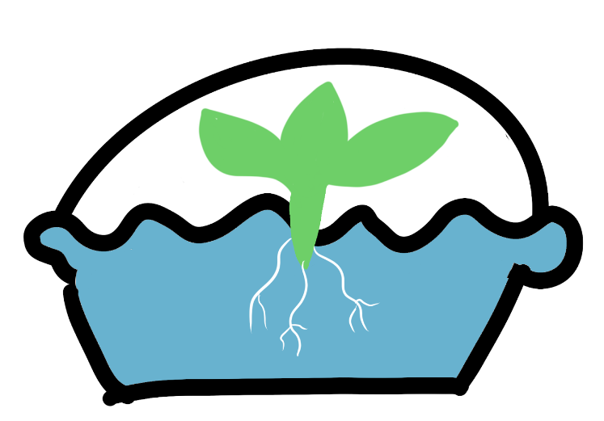
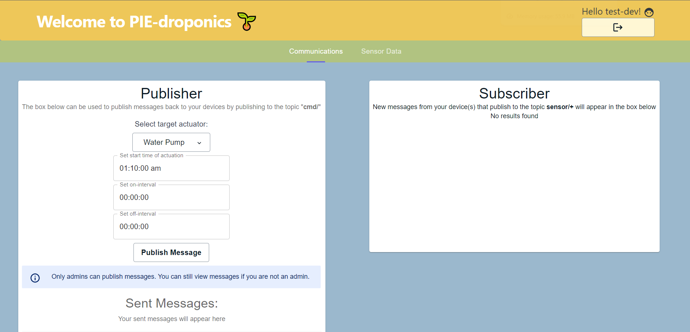

Final Product
System Diagram
flowchart TD
A([User])
style A fill:#00ff00,stroke:#333,stroke-width:4px;
B([React App])
D{ESP32}
E([Water Pump])
F([Nutrient Pump])
G([LEDs])
H([Temperature Sensor])
I([Humidity Sensor])
J([Illuminance Sensor])
K([AWS MQTT])
L[(AWS DynamoDB)]
A --> |user input|B
B --> |cmd/|K
D --> |new schedule|E
D --> |new schedule|F
D --> |new schedule|G
H --> |sensor data|D
I --> |sensor data|D
J --> |sensor data|D
D <--> |input & output data|K
K --> |sensor/+|L
L --> |GraphQL API|B
Mechanical Update
After Sprint 3, we made no major functional changes to our final design. We reinforced some of the waterproofing, and used zip ties for cable management. The biggest change was adding a wooden tabletop to the top of our cart, such that it could function as furniture in a user's home.
When we started wrapping up the project after our last Sprint, the main thing we wanted to polish before demo day was following our principle of pleasant aesthetics and being as easy to use as possible for our customers. To that end, while our PIE-droponic were both functional and compact, integration with a cart means it could be placed anywhere near a power outlet. However, one idea we were really passionate about is that the PIE-droponic wouldn't stand out wherever it is placed, and would be able to function as a piece of furniture as well as being able to grow plants. To that end, we designed a logo for our project. Our branding has mostly stayed consistent in our project, and we all thought a wooden engraving would be so much more visually appealing then a plain wooden top. Our design was based upon our logo:
So after we designed a new logo on illustrator, we laser cut a shallow cut into ½’ by 2''' by 2''' plywood, which was then bandsaw down to exactly our cart's dimensions. We next sanded down all the edges to make sure the wood was easy to handle and grab onto. Finally, we used a finish in the LPB composites bay to ensure the wood's safety, as well as giving it a final level of professionalism.
Electrical Update
The electrical components stayed the same from Sprint III.
Software Update
Most of the software improvments from Sprint III involved improving the UI of the React App. The functionality stayed the same, but we gave the website an aesthetic improvement.

Image of Old React App
Image of New React App
Final Product Demo

Visit our React App
Finishing Thoughts
This project's been a super great learning on how I can use a lot of my mechanical skills to explore different project areas. Once we decided on hydroponics for our project, it became so much fun to do research on different materials, learn how we can fabricate in house, and see our project assembled step by step. I really hope I can continue to use my previously learned skills to continue to discover new application sectors at Olin, and have the same open-mindedness for growth and love for learning to become as passionate as I am with PIE-dro. - Satchel